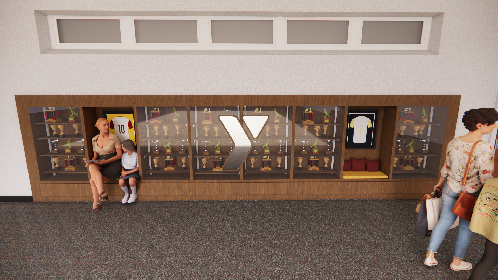
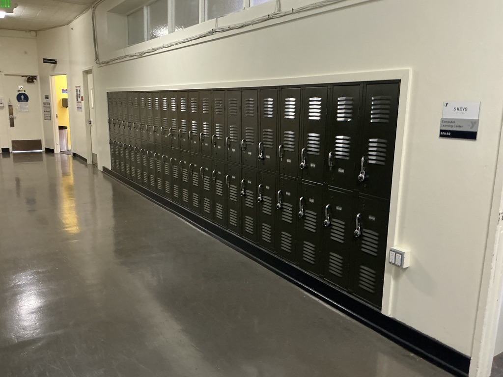
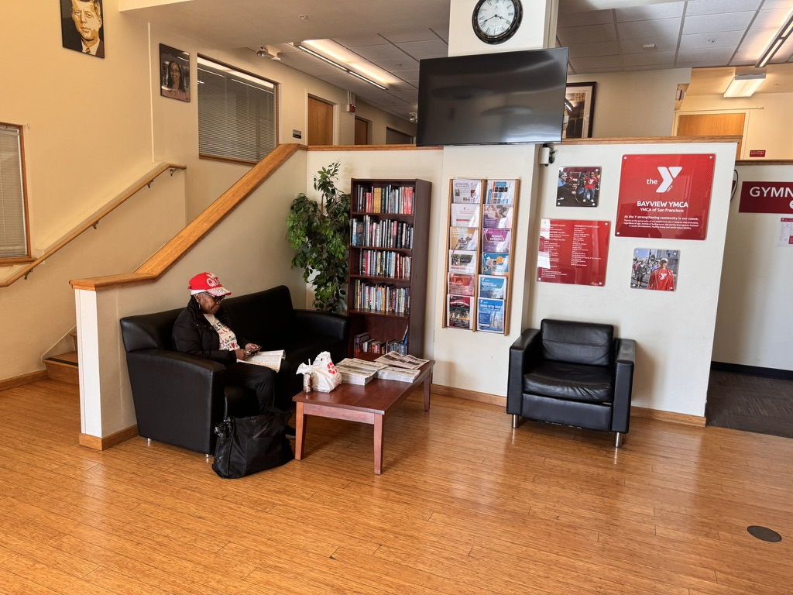
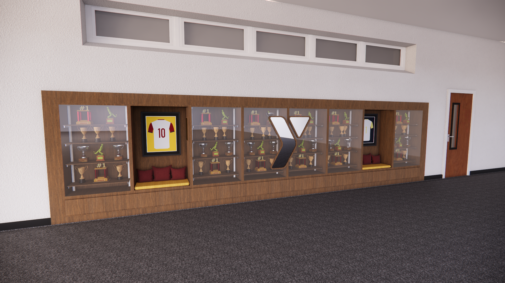
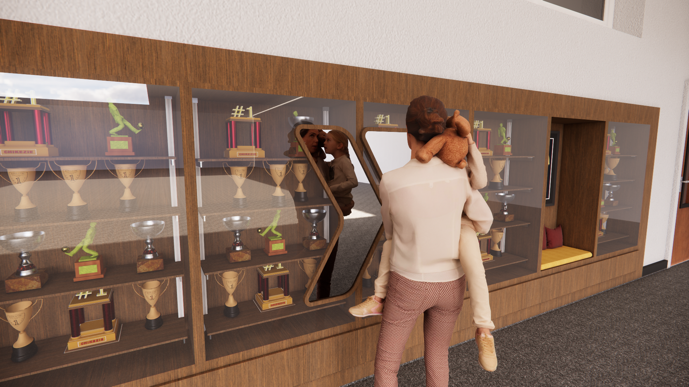
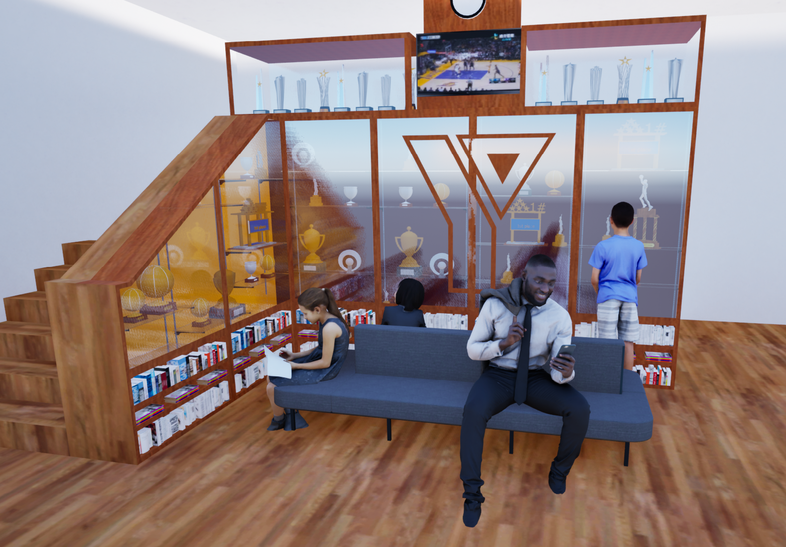
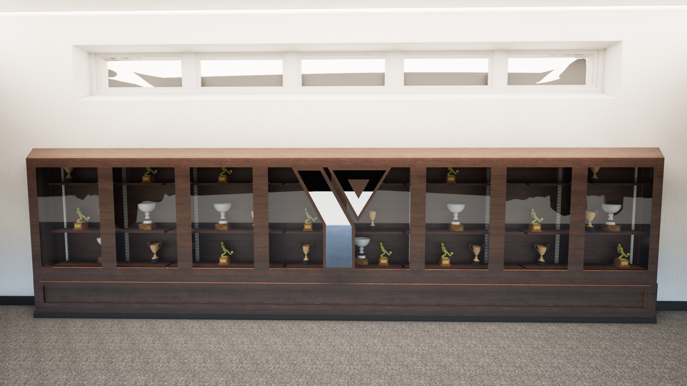

locker area — final render

lobby — final render
celebrating a community's accomplishments in built form

both sites began the same way: on-site visits with a handheld lidar scanner to capture exact dimensions, architectural details, and spatial relationships. the raw scan data was then converted into clean sketchup models, giving us a precise digital twin of each space to design within — no guesswork, no tape-measure approximations.
this approach meant the final designs could be evaluated against real sightlines, foot traffic, and structural constraints from day one, rather than discovering fit problems during fabrication.
the locker area is a high-traffic, utilitarian corridor — people are moving, not lingering. the trophy case needed to be visible and compelling without creating a bottleneck or feeling out of place next to gym infrastructure.
the lidar scan revealed the exact wall geometry, clearances from lockers, and overhead obstructions. the final design sits flush with the architectural rhythm of the space — prominent enough to celebrate the community's accomplishments, restrained enough to respect the corridor's function.

the lobby is the ymca's front door — the first thing members and visitors see. the display here carries more ceremonial weight: it needs to feel welcoming, make people proud, and hold the community's story at eye level.
the lidar capture mapped the full entryway, including sightlines from the main doors, reception desk relationship, and available wall depth. the design places the case where it commands attention naturally without competing with wayfinding or creating visual clutter at arrival.

the two trophy cases take distinct but complementary approaches, reflecting the different needs of each location while sharing a unified material palette and design vocabulary.

prioritizes elegance and striking presence. premium materials create a centerpiece that rewards a glance in passing — designed for the speed of the corridor.

emphasizes versatile display and ease of use. maximizes storage capacity while maintaining polish — designed for the ceremony of arrival.
each site went through multiple render iterations — testing material finishes, proportions, shelf spacing, and lighting responses before arriving at the final designs.


